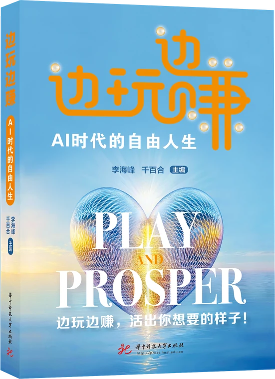
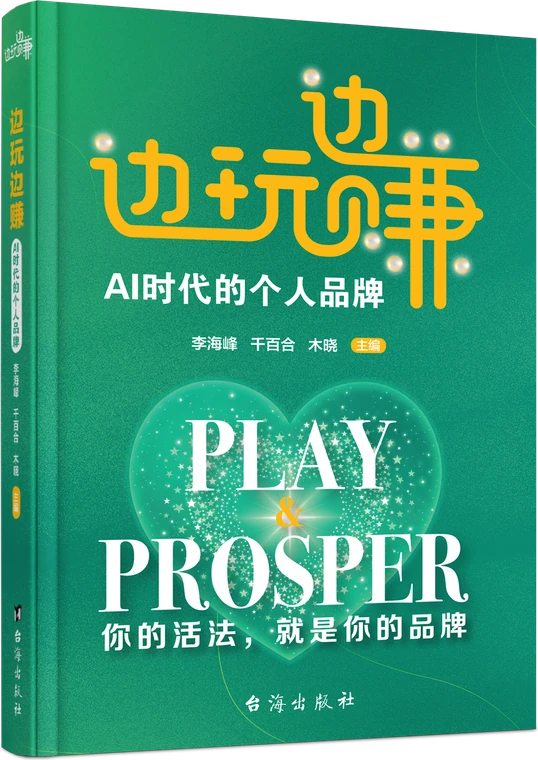
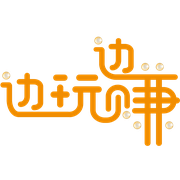
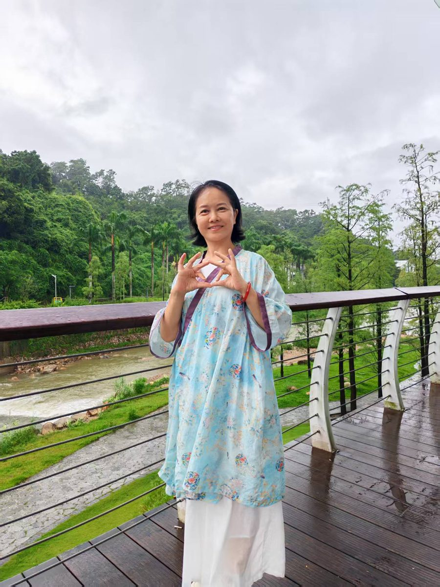
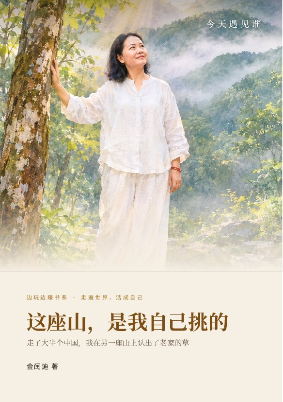
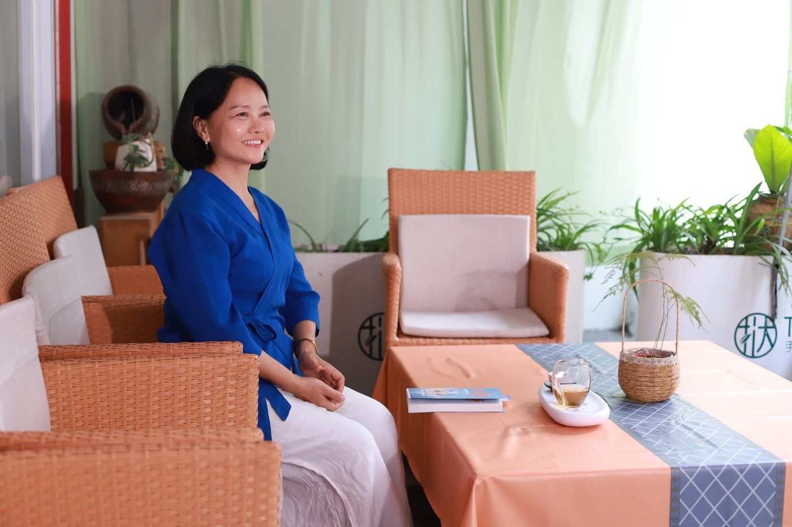

边玩边赚 加微信湖北房县山里长大，十七岁揣着 20 元出的门，走了大半个中国。在美业一路做到全国总督导，后来成了国家认证营养师。
如今住在深圳梧桐山，开了一间云谷精舍。喝茶、读书、种草，陪人把身体一点点养回来。
这张卡上的二维码，就通到这一页。
书 5《走遍世界，活成自己》里，我写了这一路。
那时候家里没有电话。我给同学写信，托她在城里帮我找份活。走那天，我拎着一个方便袋，兜里 20 元。
车往山外开的时候，我没回头。
进厂，学手艺，自己开店，在美业一路做到全国总督导，最忙的时候手底下带一大帮人。
认识两年的人，让我用自己的名义帮他贷一笔钱。那笔钱我一分没花到，最后全是我还的。老师一句话点醒了我：
你有善良，没有智慧。
前后两次，在山上住了些不见日月的日子，找到了自己真正的力量。
我妈磨了一辈子豆腐。走了几千里，我在人家的村子里，撞见她那件事的另一种做法。
凡是让我觉得累的，我都停下来。有事先跟 AI 把话理一遍，再开口。
住上来的第一个早上，我去河边走。石头缝里那一丛鱼腥草，薄荷、水竹草、三棱草——全是我们老家河沟边上长的东西。

那座山，是生我的地方。
这座山，是我自己挑的
养我的地方。
你有善良，没有智慧。
老师点醒她的一句话你的好心，人家不一定接得住。
她这几年学会的事凡是让我觉得累的，我都停下来。
她给日子做的减法
我做的是一件跟身体有关的事。不急，不卷，先坐下来喝杯茶，聊聊你最近过得怎么样。

上山住几天，喝茶、走河、种草
跟着营养师，一起把身体养回来
看你的身体和日子，慢慢调
我们可能聊得来：爱喝茶、爱读书、种花草，还有湖北老乡。


预约签名书、问问身体、约上山喝茶，都可以。
在微信里打开，长按二维码识别。加的时候请备注「官网」。